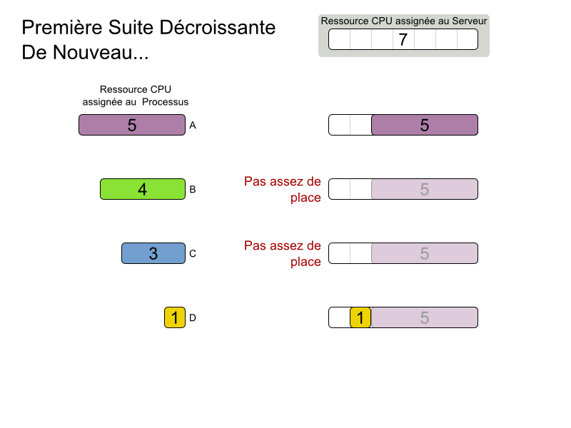
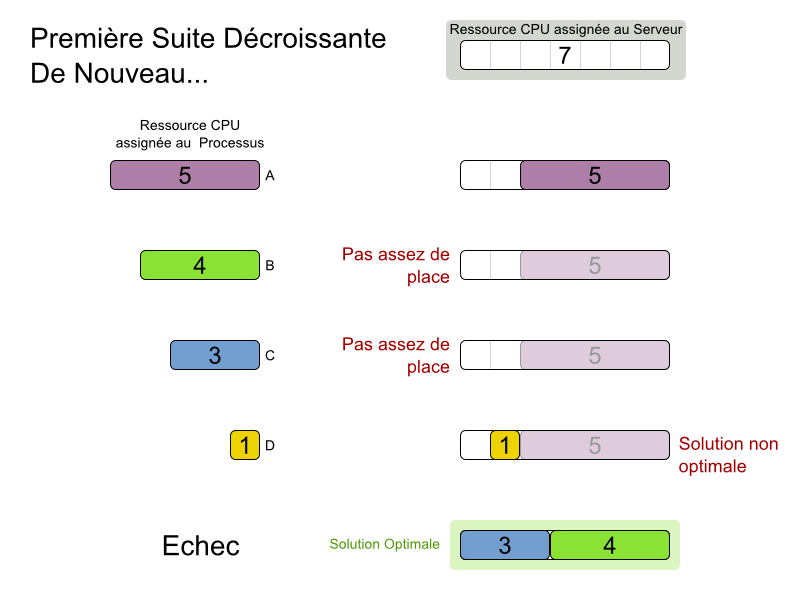
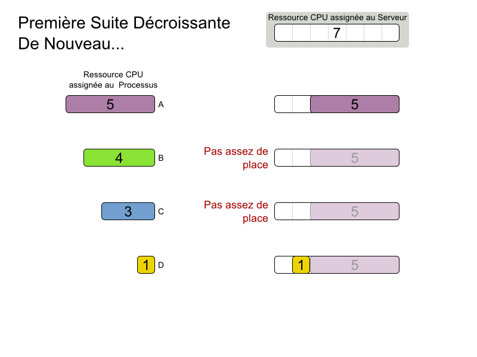
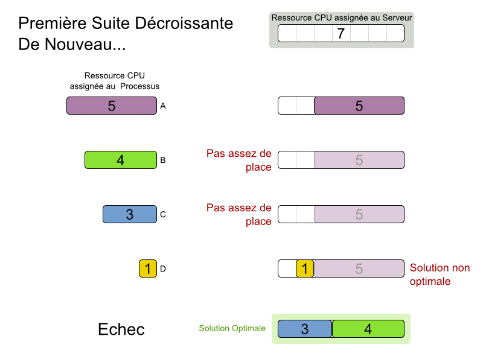
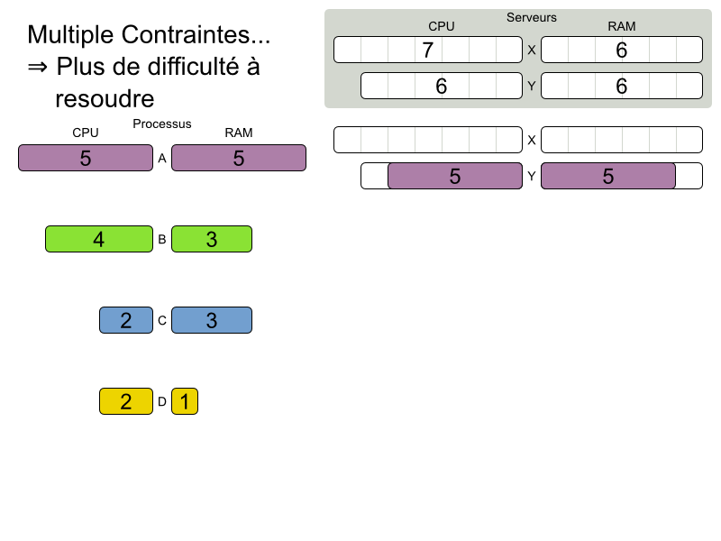
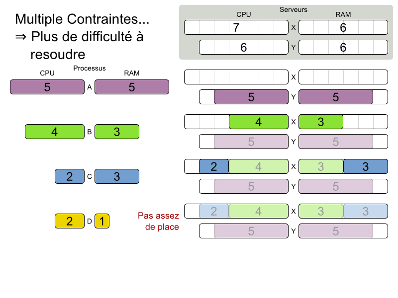
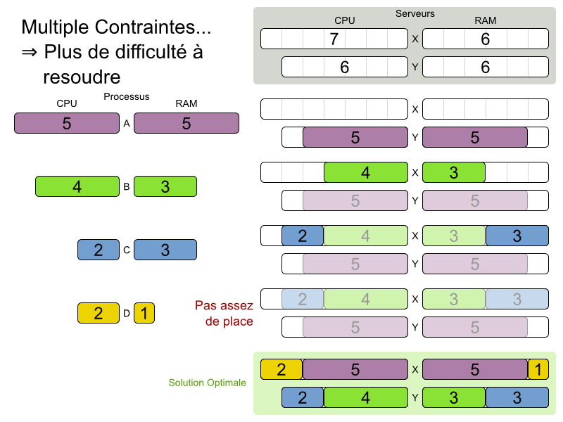
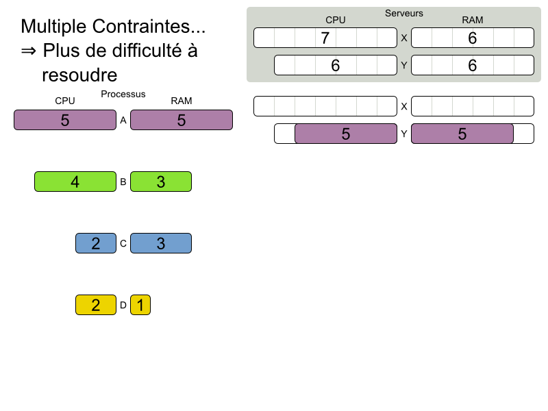
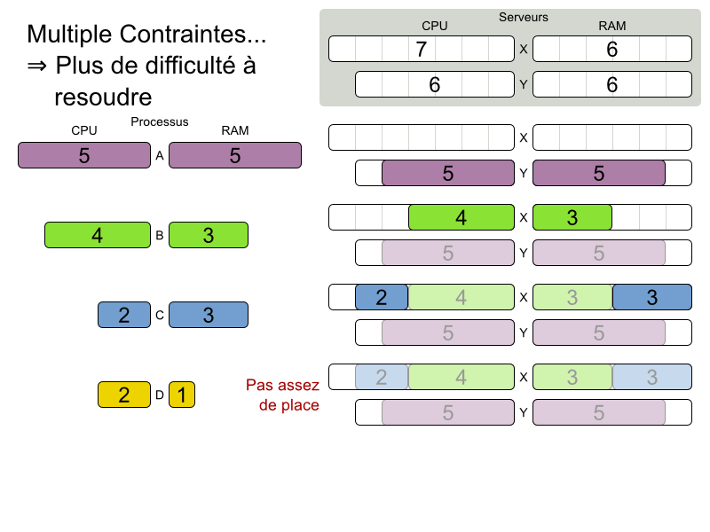
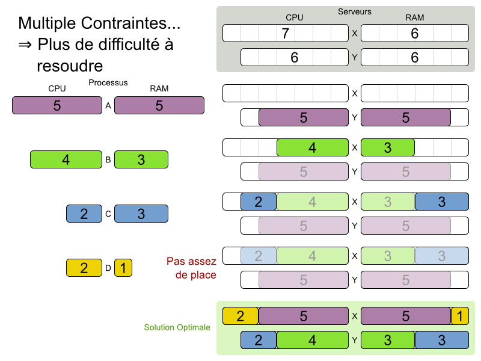

#OptaPlanner
#OptaPlanner
@fhornain
@GeoffreyDeSmet
Comment optimiser
les itinéraires,
les plannings
et bien plus encore...
par
Frederic Hornain (Solution Architect)
Geoffrey De Smet (OptaPlanner leader)
What is business resource optimization?
TSP demo

TSP
is an academic problem
What is realistic
business resource optimization?
VRP demo


Are planning problems
difficult to solve?
What is business resource optimization?
Cloud Balancing demo
 



 





Reuse optimization algorithms

Find better solutions in time and scale out
- Open source
Apache License - Regular releases
Download the zip or from Maven Central - Documented
Reference manual, examples, ... - Quality coverage
Unit, integration and stress tests
Cloud Balancing example
Domain model
Computer
public class Computer {
private int cpuPower;
private int memory;
private int networkBandwidth;
private int cost;
// getters
}Process is a planning entity
@PlanningEntity
public class Process {
private int requiredCpuPower;
private int requiredMemory;
private int requiredNetworkBandwidth;
// getters
...
}Process has a planning variable
@PlanningEntity
public class Process {
...
private Computer computer;
@PlanningVariable(valueRangeProviderRefs = {"computerRange"})
public Computer getComputer() {
return computer;
}
public void setComputer(Computer computer) {
this.computer = computer;
}
}Cloud Balancing example
Score constraints
Given 2 solutions
which one is better?
Cloud Balancing example
Optimization algorithms
Brute force scalability

Plan 1200 processes with brute force?

Local Search results
Cost ($) reduction
Benchmark results
Demo
Summary
- OptaPlanner solves planning and scheduling problems
- Adding constraints: easy and scalable
- Switching/combining optimization algorithms: easy
Build from source
$ git clone git@github.com:droolsjbpm/optaplanner.git
...
$ cd optaplanner
$ mvn clean install -DskipTests
...
$ cd optaplanner-examples
$ mvn exec:exec
...Q & A
- OptaPlanner homepage
- Reference manual
- Download/fork this presentation
- Que pensez-vous de cette présentation?
- Twitter: @fhornain - @GeoffreyDeSmet